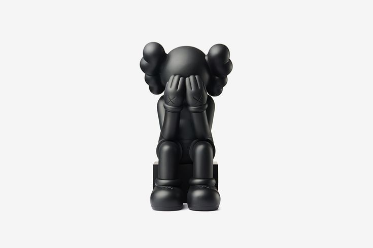
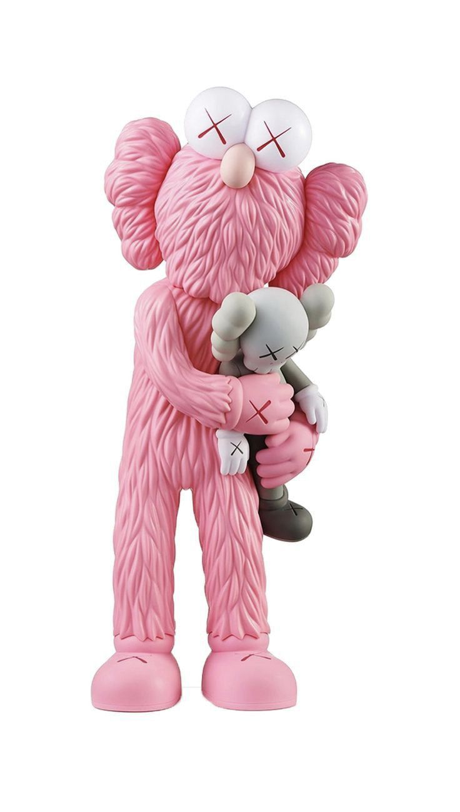
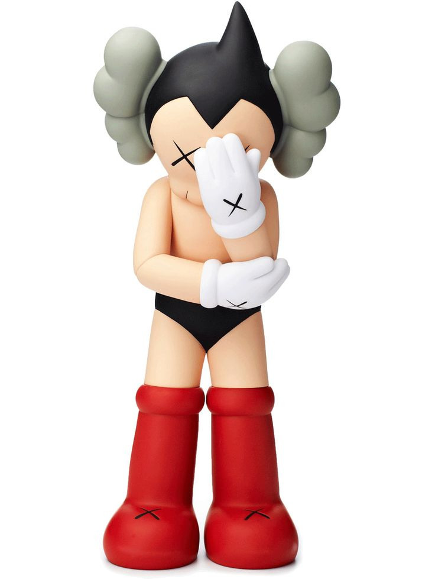
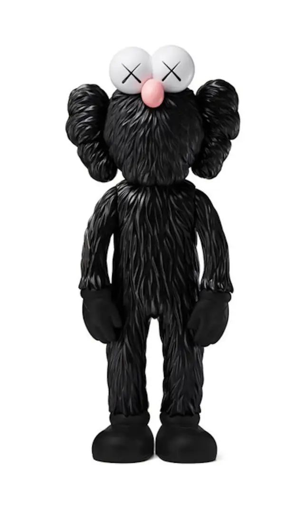

...

SOBRE NOSOTROS
Somos una tienda especializada en figuras de arte urbano y coleccionismo.
En nuestra página web encontrarás un universo dedicado al coleccionismo streetwear, donde el arte urbano, la cultura del hype y el diseño contemporáneo se fusionan en forma de figuras únicas. Cada pieza está inspirada en la estética de la calle: sneakers icónicas, grafiti, moda oversized y referencias a la cultura pop que marcan tendencia en todo el mundo.
Nuestro catálogo reúne desde art toys de edición limitada hasta figuras exclusivas diseñadas por artistas emergentes y consolidados. Aquí no solo compras una figura, adquieres una obra que representa actitud, identidad y estilo. Trabajamos con materiales de alta calidad y acabados premium, pensados tanto para coleccionistas exigentes como para quienes quieren iniciarse en este mundo.
Además, la plataforma ofrece lanzamientos exclusivos, colaboraciones especiales y drops limitados que convierten cada visita en una oportunidad única. La comunidad es parte esencial del proyecto: compartimos inspiración, procesos creativos y novedades del streetwear global.
Si te apasiona la cultura urbana, el diseño y el coleccionismo, este es tu espacio. Más que una tienda, somos un punto de encuentro para quienes entienden que el streetwear también se vive en forma de arte.
Top ventas


